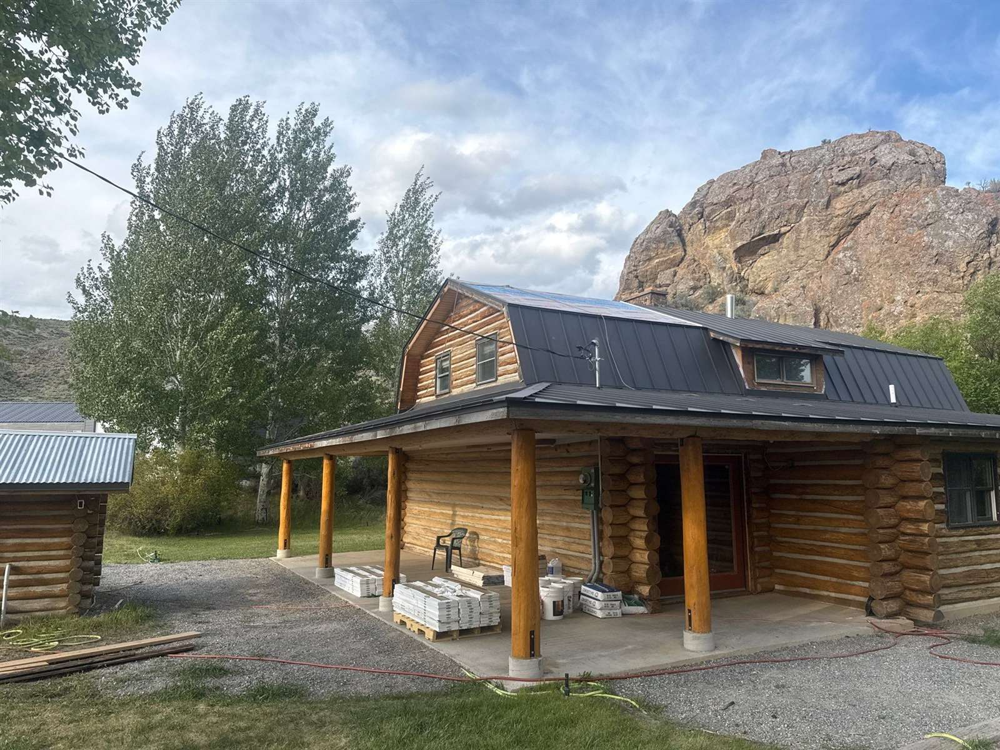

An owner's representative — an owner's rep — is a professional you hire to act on your behalf during a construction project: reviewing budgets and invoices, monitoring schedule and quality, and reporting back so you don't have to supervise the work yourself. In second-home markets like Sun Valley, where most owners live somewhere else, it's a natural thing to search for. Whether you actually need one depends on your project — and on your builder. Here's the honest breakdown, from a builder.

What an owner's representative does in construction
A good owner's rep is your professional stand-in. Typical duties include vetting and hiring the design and construction team, reviewing contracts, checking pay applications against work actually completed, attending site meetings, tracking schedule against milestones, and flagging quality problems while they're still fixable. Reps typically charge either a percentage of construction cost or a monthly fee, and on a large custom home that adds a real line item to the budget.
Note what an owner's rep is not: they're not the builder, they don't manage the trades day to day, and they can't fix a problem — only catch it. Their value is oversight and information flow between you and the people doing the work.
When hiring one genuinely makes sense
- Large or unusually complex projects — multiple prime contracts, technical systems, or a scope that needs a full-time professional eye across many parties.
- You can't vet the builder yourself — you're hiring in an unfamiliar market, references are thin, and you want independent verification before and during the work.
- You want contractual separation — some owners simply prefer a paid advocate whose only loyalty is to them, whatever the builder's reputation. That's legitimate.
- The relationship has already gone wrong — a project in trouble with a builder you no longer trust is the classic reason reps get hired mid-stream.
When your builder should already be doing this job
Here's the part most articles won't say: on a typical residential project, most of what owners hope a rep will provide — visibility, honest reporting, budget transparency, someone answering the phone — is simply what a good contractor owes you. If you need to hire a second professional to make your builder communicate, the problem isn't the missing rep.
The oversight a rep provides is, in large part, how we run every project: photo and video updates on a rhythm, decisions framed with options and costs, open schedule reporting, and one person who answers the phone. Most of our clients live out of state — it's the reality this valley is built on, and it's why our whole way of working with out-of-state owners is structured around you seeing everything without being here.
Before you hire an owner's rep, ask your builder candidates these four questions:
How often will I get photo updates, and will they come without my asking? Can I see the budget and what's been billed against it, any time? Who exactly answers when I call? What happened on your last project when something went over budget?
A builder who answers those four plainly is already doing most of the rep's job. A builder who can't is telling you something no rep can fix.
Our honest position
Chase Construction doesn't sell owner's representation — we're a builder, and a rep should be independent of the contractor by definition. If your project calls for one, we'll work alongside them gladly; good reps make projects smoother, and we have nothing to hide from one. But if what you're really looking for is a builder in Sun Valley, Ketchum, or Hailey you don't need to be represented against — transparent costs, honest reporting, and your home's condition documented in photos whether you're here or in another time zone — that's the way we already work. Call 208-897-8100 and judge for yourself.